|

| Здравствуйте, Гость ( Вход | Регистрация | Что даёт регистрация на форуме? ) | Восстановить пароль | Выслать повторно письмо для активации |
|
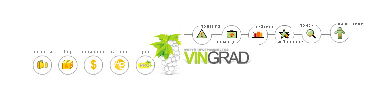
Форум
программистов Vingrad |
|
Модераторы: Girder, Rrader |
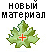 |
|
Как экспортировать данные из StringGrid в Excel?
|
|
|


 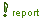
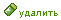
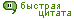
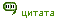
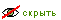
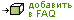
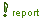
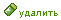
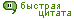
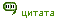
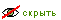
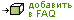
| Правила форума "Delphi: ActiveX/СОМ/CORBA" | |
|
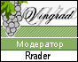 |
Запрещено: 1. Публиковать ссылки на вскрытые компоненты 2. Обсуждать взлом компонентов и делиться вскрытыми компонентами
Если Вам помогли, и атмосфера форума Вам понравилась, то заходите к нам чаще! С уважением, Rrader, Girder. |
| 1 Пользователей читают эту тему (1 Гостей и 0 Скрытых Пользователей) | |
| 0 Пользователей: | |
| « Предыдущая тема | Delphi: ActiveX/СОМ/CORBA | Следующая тема » |
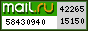


Реклама на сайте
[ Время генерации скрипта: 0.6232 ] [
Использовано запросов: 23 ] [ GZIP включён ]
Реклама на сайте
|
|
По
вопросам размещения рекламы пишите на vladimir(sobaka)vingrad.ru
Хостинг: Vingrad Hosting Отказ от ответственности Powered by Invision Power Board(R) 1.3 © 2003 IPS, Inc. |
 |